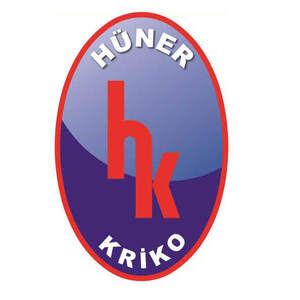

Trade Mark Journal No.2025/046 14 November 2025
UK00004287420 31 October 2025 (6,9,12,35)

- Class 6
- Ores of non-precious metal; common metals and their alloys; cast iron for use in building; reinforcing materials of metal for building; common metals in the form of plate, billet, stick, profile, sheet and sheeting; containers of metal (storage, transport); buildings of metal; frames of metal for building; poles of metal for building; metal boxes; packaging containers of metal; aluminium foil; fences made of metal; guard barriers of metal; metal tubes; storage containers of metal; metal containers for the transportation of goods; ladders of metal; metal window screens; metal drain traps; doors, windows, shutters, jalousies of metal; non-electric cables and wires of metal; ironmongery; small hardware of metal; screws of metal; nails; bolts of metal; nuts of metal; pegs of metal; flakes of metal for industrial and construction use; pitons of metal; metal chains; furniture casters of metal; fittings of metal for furniture; metal wheel clamps; door handles of metal; window handles of metal; hinges of metal; metal latches; metal locks; metal keys for locks; metal rings for carrying keys; metal pulleys; ducts of metal for ventilating installations; metal vents for buildings; metal vent covers; metal pipes; chimneys of metal; chimney cowls of metal; metal manhole covers; grilles of metal for ventilation, heating, sewage, telephone cable, underground electricity and air conditioning installations; signboards of metal; advertisement columns of metal; signaling panels of metal, non-luminous and non-mechanical; traffic signs, non-luminous and non-mechanical, of metal; pipes of metal for transportation of liquids and gas; drilling pipes of metal and their metal fittings; valves of metal; couplings of metal for pipes, elbows of metal for pipes; clips of metal for pipes; connectors of metal for pipes; safes (strong boxes) of metal; metal railway materials; metal rails; metal railway ties; railway switches; bollards of metal; floating docks of metal; mooring buoys of metal; anchors; metal moulds for casting, other than machine parts; works of art made of common metal; trophies of common metal; metal closures; bottle caps of metal; metal poles; metal pillars for building; scaffolding of metal; metal garden stakes; metal pallets and metal ropes for lifting, loading and transportation purposes; metal hangers, ties, straps, tapes and bands used for load-lifting and load-carrying; wheel chocks made primarily of metal; decorative metal profiles; braces of metal for handling loads.
- Class 9
- Measurement apparatus and equipment including those for scientific, nautical, topographic, meteorologic, industrial and laboratory purposes, thermometers, not for medical purposes; barometers, ammeters, voltmeters, hygrometers, testing apparatus not for medical purposes; telescopes, periscopes, directional compasses, speed indicators, laboratory apparatus, microscopes, magnifying glasses, binoculars, stills, ovens and furnaces for laboratory experiments; apparatus for recording, transmission or reproduction of sound or images; cameras; photographic cameras; television apparatus; video recorders; CD and DVD players and recorders; MP3 players; computers; desktop computers; tablet computers; wearable activity trackers; microphones; loudspeakers; earphones; telecommunications apparatus; apparatus for the reproduction of sound or images; computer peripheral devices; cell phones; covers for cell phones; telephone apparatus; computer printers; scanners [data processing equipment]; photocopiers; magnetic and optical data carriers and computer software and programmes recorded thereto; downloadable and recordable electronic publications; encoded magnetic and optic cards; prerecorded motion picture films; prerecorded music videos; antennas, satellite antennas, amplifiers for antennas, parts of the aforementioned goods; ticket dispensers; automatic teller machines (ATM); electronic components used in the electronic parts of machines and apparatus; semi-conductors; electronic circuits; integrated circuits; chips [integrated circuits]; diodes; transistors [electronic]; magnetic heads for electronic apparatus; electronic locks; photocells; remote control apparatus for opening and closing doors, optical sensors; counters and quantity indicators for measuring the quantity of consumption; automatic time switches; clothing for protection against accidents, irradiation and fire; safety vests and life-saving apparatus and equipment; eyeglasses; sunglasses; optical lenses and cases; containers, parts and components thereof; apparatus and instruments for conducting, transforming, accumulating or controlling electricity; electric plugs; junction boxes [electricity]; electric switches; circuit breakers; fuses; lighting ballasts; battery starter cables; electrical circuit boards; electric resistances; electric sockets; transformers [electricity]; electrical adapters; battery chargers; electric door bells; electric and electronic cables; batteries; electric accumulators; solar panels for production of electricity; alarms and anti-theft alarms, other than for vehicles, electric bells; signalling apparatus and instruments, luminous or mechanical signs for traffic use; fire extinguishing apparatus, fire engines, fire hose and fire hose nozzles; radar apparatus, sonars, night vision apparatus and instruments; decorative magnets; metronomes; computer and mobile application software.
- Class 12
- Motor land vehicles; motorcycles; mopeds; engines and motors for land vehicles; clutches for land vehicles; transmissions, transmission belts, and transmission chains for land vehicles; gearing for land vehicles; brakes, brake discs, and brake linings for land vehicles; vehicle chassis; automobile bonnets; vehicle suspension springs; shock absorbers for automobiles; gearboxes for land vehicles; steering wheels for vehicles; rims for vehicle wheels; bicycles and their bodies; handlebars and mudguards for bicycles; vehicle bodies; tipping bodies for trucks; trailers for tractors; refrigerated bodies for land vehicles; trailer hitches for vehicles; vehicle seats; headrests for vehicle seats; safety seats for children in vehicles; seat covers for vehicles; vehicle covers (shaped); sun-blinds adapted for vehicles; direction signals and arms for direction signals for vehicles; windscreen wipers and wiper arms for vehicles; inner tubes and tires for vehicle wheels; tubeless tires; tire-fixing sets comprising tire patches and tire valves for vehicles; windows for vehicles; safety windows for vehicles; rearview mirrors and wing mirrors for vehicles; anti-skid chains for vehicles; luggage carriers for vehicles; bicycle and ski carriers for cars; saddles for bicycles or motorcycles; air pumps for vehicles for inflating tires; anti-theft alarms for vehicles; horns for vehicles; safety belts for vehicle seats; airbags (safety devices for automobiles); baby carriages; wheelchairs; pushchairs; wheelbarrows; shopping carts; single or multi-wheeled wheelbarrows; shopping trolleys; grocery carts; handling carts; rail vehicles: locomotives; trains; trams; wagons; cable cars; chairlifts; vehicles for locomotion by water and their parts, other than their motors and engines; vehicles for locomotion by air and their parts, other than their motors and engines; Straddle carriers.
- Class 35
- Advertising, marketing and public relations; organization of exhibitions and trade fairs for commercial or advertising purposes; development of advertising concepts; provision of an online marketplace for buyers and sellers of goods and services; the bringing together, for the benefit of others, of a variety of goods, namely, Ores of non-precious metal, common metals and their alloys, cast iron for use in building, reinforcing materials of metal for building, common metals in the form of plate, billet, stick, profile, sheet and sheeting, containers of metal (storage, transport), buildings of metal, frames of metal for building, poles of metal for building, metal boxes, packaging containers of metal, aluminium foil, fences made of metal, guard barriers of metal, metal tubes, storage containers of metal,metal containers for the transportation of goods, ladders of metal, metal window screens, metal drain traps, doors, windows, shutters, jalousies of metal, non-electric cables and wires of metal, ironmongery, small hardware of metal, screws of metal, nails, bolts of metal, nuts of metal, pegs of metal,flakes of metal for industrial and construction use, pitons of metal, metal chains,furniture casters of metal, fittings of metal for furniture, metal wheel clamps, door handles of metal, window handles of metal, hinges of metal, metal latches, metal locks, metal keys for locks, metal rings for carrying keys, metal pulleys, ducts of metal for ventilating installations, metal vents for buildings, metal vent covers, metal pipes,chimneys of metal, chimney cowls of metal,metal manhole covers, grilles of metal for ventilation, heating, sewage, telephone cable, underground electricity and air conditioning installations, signboards of metal, advertisement columns of metal, signaling panels of metal, non-luminous and non-mechanical, traffic signs, non-luminous and non-mechanical, of metal, pipes of metal for transportation of liquids and gas, drilling pipes of metal and their metal fittings, valves of metal, couplings of metal for pipes, elbows of metal for pipes, clips of metal for pipes, connectors of metal for pipes, safes (strong boxes) of metal, metal railway materials,metal rails, metal railway ties, railway switches, bollards of metal,floating docks of metal, mooring buoys of metal, anchors, metal moulds for casting, other than machine parts, works of art made of common metal, trophies of common metal, metal closures, bottle caps of metal, metal poles, metal pillars for building, scaffolding of metal, metal garden stakes, metal pallets and metal ropes for lifting, loading and transportation purposes, metal hangers, ties, straps, tapes and bands used for load-lifting and load-carrying, wheel chocks made primarily of metal, decorative metal profiles, braces of metal for handling loads, Measurement apparatus and equipment including those for scientific, nautical, topographic, meteorologic, industrial and laboratory purposes, thermometers, not for medical purposes, barometers, ammeters, voltmeters, hygrometers, testing apparatus not for medical purposes, telescopes, periscopes, directional compasses, speed indicators, laboratory apparatus, microscopes, magnifying glasses, binoculars, stills, ovens and furnaces for laboratory experiments, apparatus for recording, transmission or reproduction of sound or images, cameras, photographic cameras, television apparatus, video recorders, CD and DVD players and recorders, MP3 players, computers, desktop computers, tablet computers, wearable activity trackers, microphones, loudspeakers, earphones, telecommunications apparatus, apparatus for the reproduction of sound or images, computer peripheral devices, cell phones, covers for cell phones,telephone apparatus, computer printers, scanners [data processing equipment], photocopiers, magnetic and optical data carriers and computer software and programmes recorded thereto, downloadable and recordable electronic publications, encoded magnetic and optic cards,prerecorded motion picture films, prerecorded music videos, antennas, satellite antennas, amplifiers for antennas, parts of the aforementioned goods, ticket dispensers, automatic teller machines (ATM), electronic components used in the electronic parts of machines and apparatus, semi-conductors, electronic circuits, integrated circuits, chips [integrated circuits], diodes, transistors [electronic], magnetic heads for electronic apparatus, electronic locks, photocells, remote control apparatus for opening and closing doors, optical sensors, counters and quantity indicators for measuring the quantity of consumption, automatic time switches, clothing for protection against accidents, irradiation and fire, safety vests and life-saving apparatus and equipment, eyeglasses, sunglasses, optical lenses and cases, containers, parts and components thereof, apparatus and instruments for conducting, transforming, accumulating or controlling electricity, electric plugs, junction boxes [electricity], electric switches, circuit breakers, fuses, lighting ballasts, battery starter cables, electrical circuit boards, electric resistances, electric sockets, transformers [electricity], electrical adapters, battery chargers, electric door bells, electric and electronic cables, batteries, electric accumulators, solar panels for production of electricity, alarms and anti-theft alarms, other than for vehicles, electric bells, signalling apparatus and instruments, luminous or mechanical signs for traffic use, fire extinguishing apparatus, fire engines, fire hose and fire hose nozzles, radar apparatus, sonars, night vision apparatus and instruments, decorative magnets, metronomes, computer and mobile application software, Motor land vehicles, motorcycles, mopeds, engines and motors for land vehicles, clutches for land vehicles, transmissions, transmission belts, and transmission chains for land vehicles, gearing for land vehicles, brakes, brake discs, and brake linings for land vehicles, vehicle chassis, automobile bonnets, vehicle suspension springs, shock absorbers for automobiles, gearboxes for land vehicles, steering wheels for vehicles, rims for vehicle wheels, bicycles and their bodies, handlebars and mudguards for bicycles, vehicle bodies, tipping bodies for trucks, trailers for tractors, refrigerated bodies for land vehicles, trailer hitches for vehicles, vehicle seats, headrests for vehicle seats, safety seats for children in vehicles, seat covers for vehicles, vehicle covers (shaped), sun-blinds adapted for vehicles, direction signals and arms for direction signals for vehicles, windscreen wipers and wiper arms for vehicles, inner tubes and tires for vehicle wheels, tubeless tires, tire-fixing sets comprising tire patches and tire valves for vehicles, windows for vehicles, safety windows for vehicles, rearview mirrors and wing mirrors for vehicles, anti-skid chains for vehicles, luggage carriers for vehicles, bicycle and ski carriers for cars, saddles for bicycles or motorcycles, air pumps for vehicles for inflating tires, anti-theft alarms for vehicles, horns for vehicles, safety belts for vehicle seats, airbags (safety devices for automobiles), baby carriages, wheelchairs, pushchairs, wheelbarrows, shopping carts, single or multi-wheeled wheelbarrows, shopping trolleys, grocery carts, handling carts, rail vehicles, locomotives, trains, trams, wagons, cable cars, chairlifts, vehicles for locomotion by water and their parts, other than their motors and engines, vehicles for locomotion by air and their parts, other than their motors and engines, Straddle carriers, enabling customers to conveniently view and purchase those goods, such services may be provided by retail stores, wholesale outlets, by means of electronic media or through mail order catalogues.
HUNER KRIKO VE YEDEK PARCA SANAYI VE TICARET LIMITED SIRKETI
Representative: SMYRNA LTD